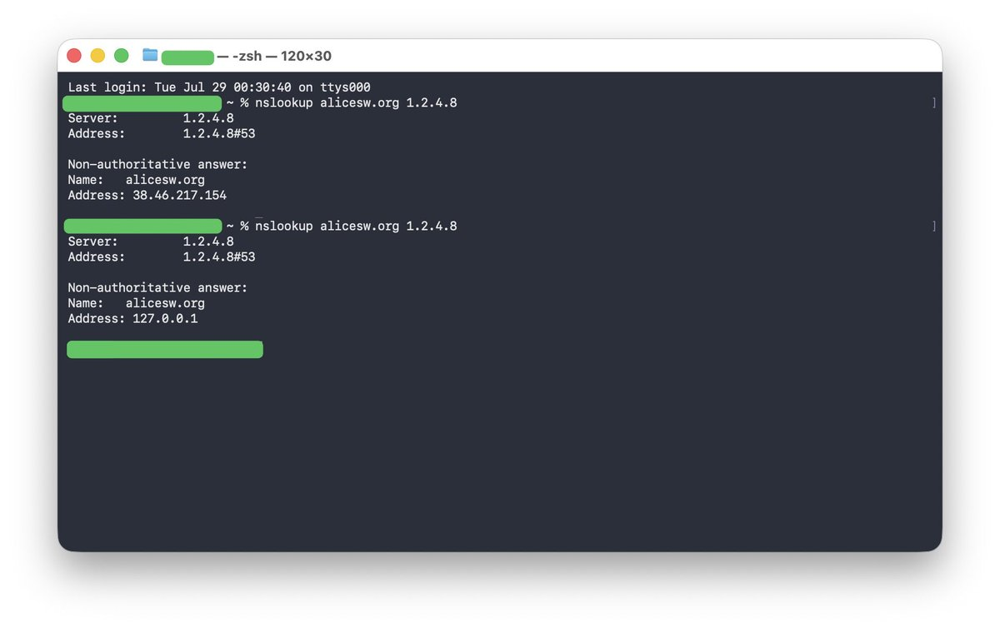

@kagurazakayashi 中国（一些）反诈体系是会监控DNS请求的，不如说是补上了中国的墙的难得的一块缺口。并且不是DNS污染，是监听劫持，因为从境外向中国的DNS服务器请求就没有问题，是本地ISP从中截取的信息。



福建电信你罪大恶极，福建/厦门反诈你也罪大恶极，不仅害得我没有小黄文看，而且幸好家宽管得松点，不然又像上次移动网络访问一样跳到反诈页面再给我打电话。一秒也忍受不了，我这就去用DNS over HTTPS，再见。
（第一份是全局代理测的，第二份是用日常分流测的，可能没传给节点去解析，就污染了。） https://t.co/D9zJUTPtTt
（第一份是全局代理测的，第二份是用日常分流测的，可能没传给节点去解析，就污染了。） https://t.co/D9zJUTPtTt
我来说一下我朋友最近遇到的情况，就这个月。
他手机是已经刷过系统的，运行的 LineageOS ，操作时使用蜂窝数据网络。
上午安装运行了 RustDesk （一个开源的远程桌面软件），下午接到 96110 电话问候。
然后晶哥就上门了，确切说来的是辅警，说是反诈宣传。 https://t.co/zF0IFnKtpT
他手机是已经刷过系统的，运行的 LineageOS ，操作时使用蜂窝数据网络。
上午安装运行了 RustDesk （一个开源的远程桌面软件），下午接到 96110 电话问候。
然后晶哥就上门了，确切说来的是辅警，说是反诈宣传。 https://t.co/zF0IFnKtpT